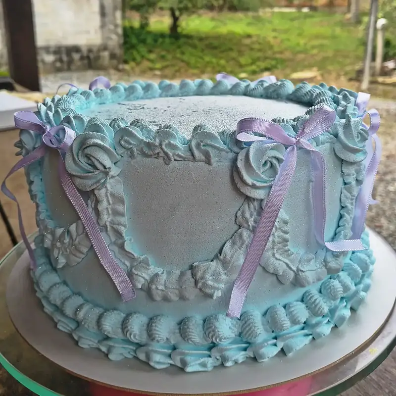
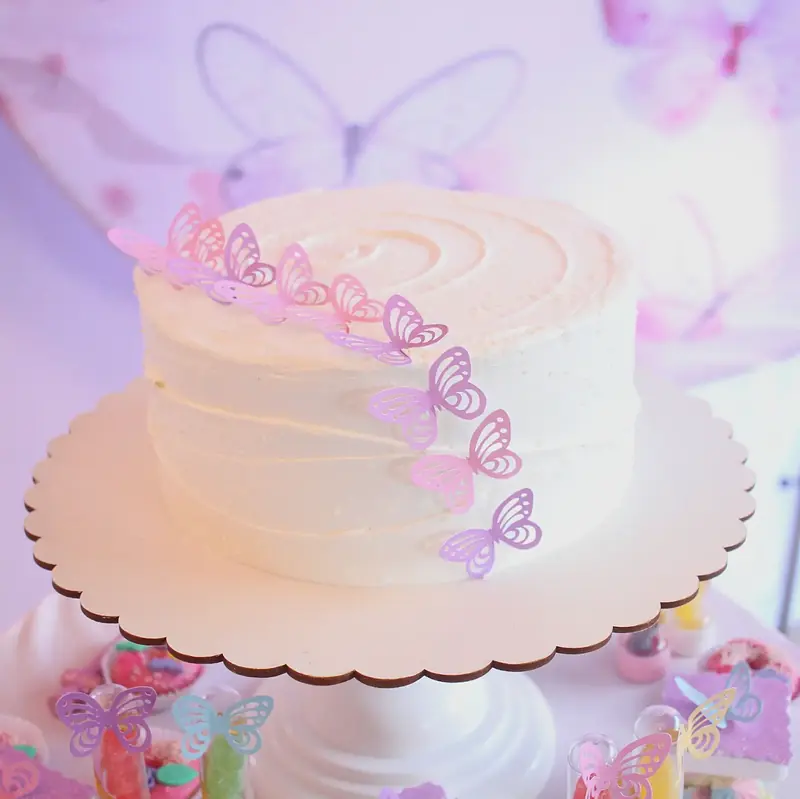
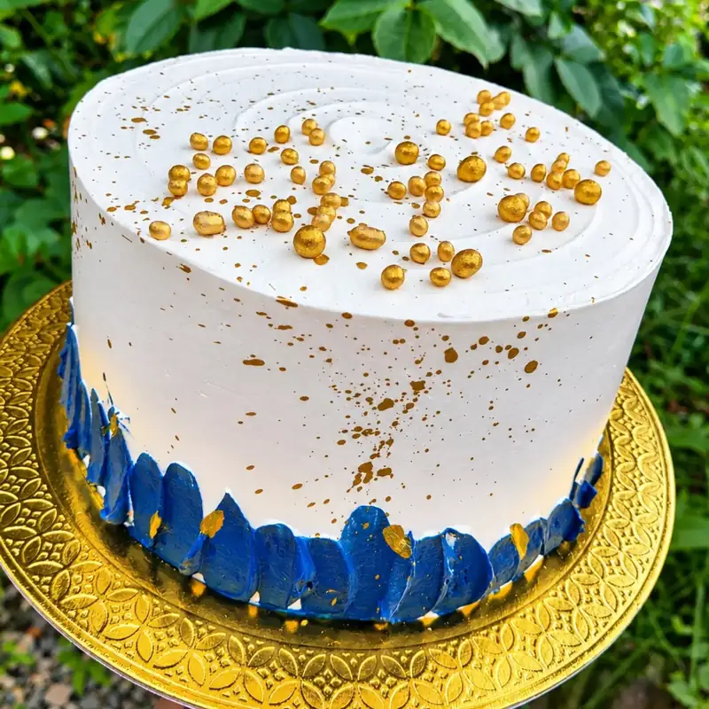
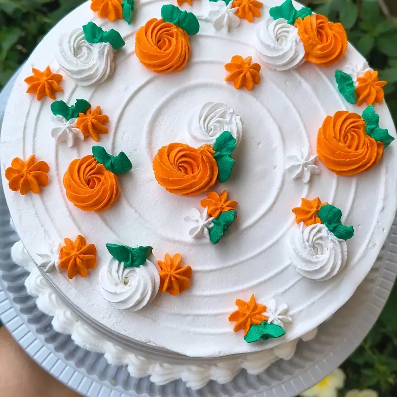

Bolos
Bolos de aniversário decorados, com laços, rosas e borboletas. Gostou de algum? Peça um parecido pelo WhatsApp.
Pedir orçamento de bolo





Bolos de aniversário decorados, com laços, rosas e borboletas. Gostou de algum? Peça um parecido pelo WhatsApp.
Pedir orçamento de bolo


